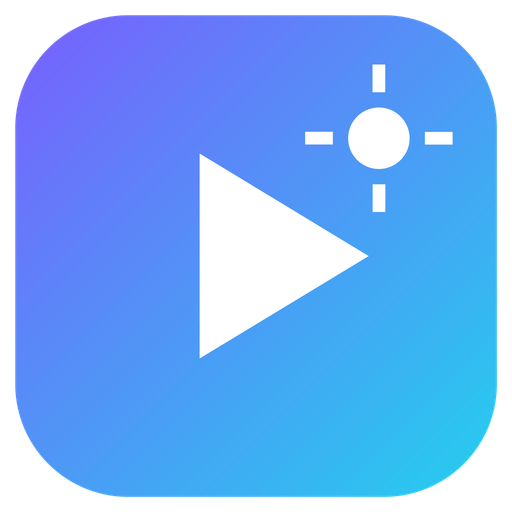

Post your short videos everywhere, on schedule
Mundo Droid Poster is a free Windows desktop app that helps creators plan, schedule and publish their own short videos to TikTok, Instagram Reels and YouTube Shorts, using only the official APIs of each platform.
Download for Windows See how it worksFeatures
Schedule in bulk
Pick many videos from your computer at once and spread them across the days and times you choose.
TikTok, Instagram and YouTube
Publish the same video to TikTok, Instagram Reels and YouTube Shorts, with captions and settings for each platform.
Full control before posting
For TikTok you choose the privacy level, comments, Duet and Stitch, commercial content disclosure and confirm the Music Usage Confirmation on every post.
Caption suggestions
Optional AI suggestions for titles and hashtags that you always review and edit before scheduling.
Real publishing status
See whether each post is scheduled, processing, published or failed, exactly as reported by each platform.
Private by design
Everything runs on your computer. Accounts connect with the official login of each platform; passwords are never requested or stored.
How it works
- Install the app on your Windows computer.
- Connect your accounts in the Accounts screen using the official TikTok, Instagram or Google login. You can disconnect at any time.
- Choose your videos, review the caption and hashtags, and select which accounts will receive each video.
- Review the platform settings. For TikTok the app shows your nickname and the privacy options allowed for your account; you pick them manually before posting.
- Pick the date and time. At the scheduled time the app uploads the video through the official API and shows the result in the Posts screen.
Download
Mundo Droid Poster is free and available for Windows 10 and 11 (64-bit).
Requires an internet connection and your own TikTok, Instagram professional or YouTube account.
Frequently asked questions
Is it free?
Yes. The app is free to download and use.
Do you store my videos or passwords?
No. Your videos stay on your computer and are sent directly to the platforms you choose. Passwords are never requested; access tokens are encrypted on your computer. See the Privacy Policy.
Can I post content I don't own?
No. You may only publish content you own or have the rights to publish, as described in the Terms of Service.
How do I disconnect an account?
Inside the app, open Accounts and remove the account. You can also revoke access in the settings of TikTok, Instagram or Google.
Is this an official TikTok, Instagram or YouTube app?
No. Mundo Droid Poster is an independent app that uses the official public APIs of these platforms. It is not affiliated with or endorsed by TikTok, Meta or Google.